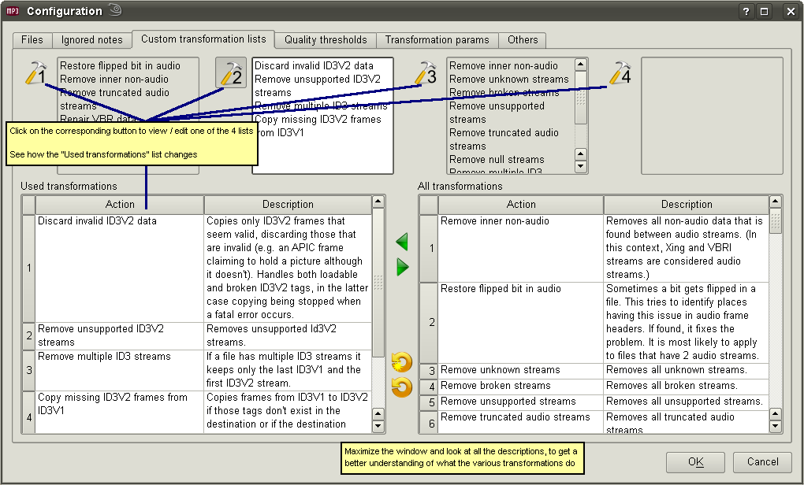

Hosted by SF
User's guide
- Config - Custom transformations

Read more about custom transformation lists
here
.
See the full list with transformations
here
.
You can open this tab if you want to see what some transformation does without pointing the browser to the documentation page, because the text in the "Description" column is in most cases copied from the documentation.
User's guide
- Config - Custom transformations